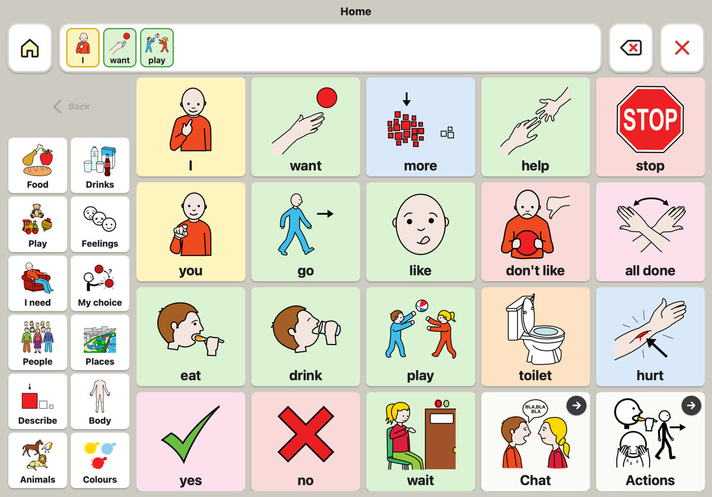
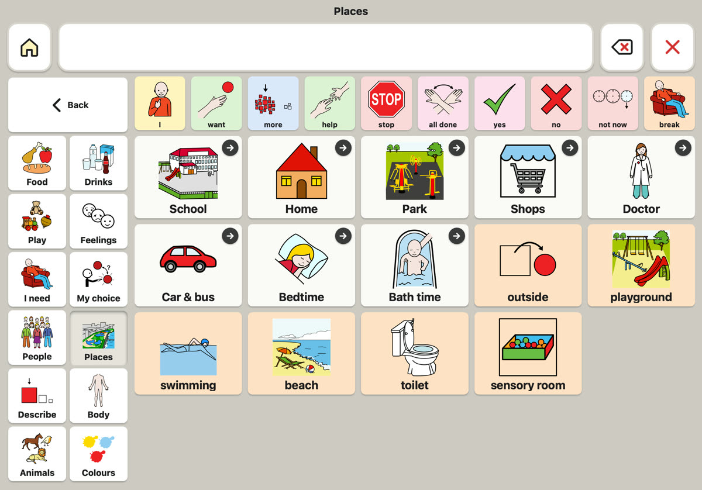
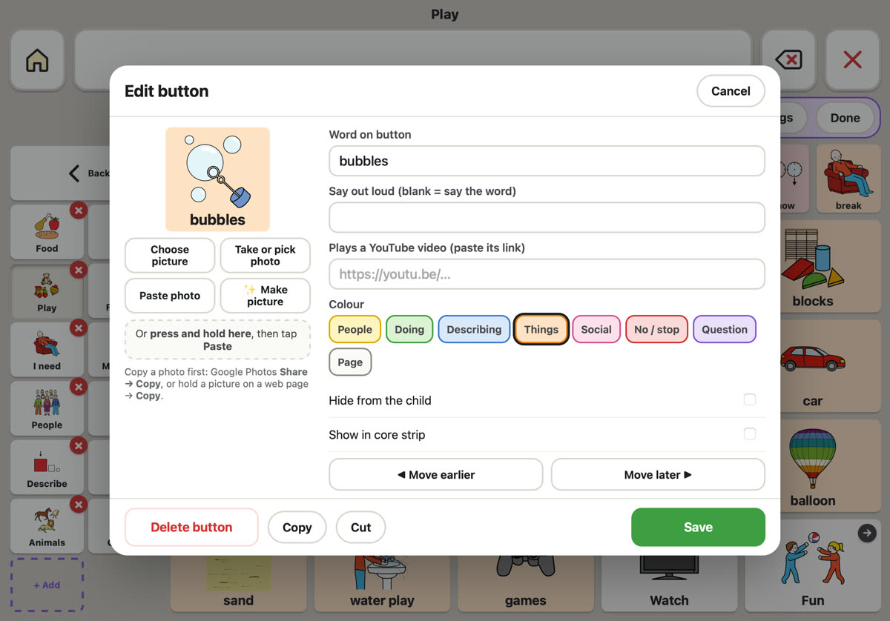

TapTalk is a free picture talker for iPad and Android tablets. Your child taps pictures to build a sentence, and TapTalk says it out loud.
TapTalk is AAC (augmentative and alternative communication): a way to talk with pictures. It suits children who don't speak yet, speak a little, or find speech hard when they're upset, for example with autism, Down syndrome or a speech disorder.
38 pages of everyday words (food, feelings, people, places, school and more), with clear ARASAAC pictures.
Add photos of their favourite things, people and places, and change any word or what it says.
Every word is recorded in a friendly voice, so it sounds the same every time, even without Wi-Fi.
Ready-made sets for Everyday, School, Out and about, Home time and a Calm set for hard moments.
Colours show the kind of word (people, doing, describing, things), and core words stay one tap away.
Editing is hidden behind a press and hold, so children can talk freely without changing anything by accident.



TapTalk runs from its web page, so there's nothing to buy or download from an app store. Once it's on the home screen it opens like an app and works offline.
Show your child how a tap says a word. Use it yourself as you talk ("I want play"); children learn by seeing it used.
Press and hold the page name at the top to start editing, then tap any button to change it or add a photo.
In Settings → Backup, save a copy to a TapTalk folder in iCloud Drive or Google Drive now and then.
Yes. There's nothing to pay now or later, and no ads. It's a volunteer project.
Only to install it. After that the pictures and voice work offline. Searching for new pictures needs the internet.
They stay on your tablet. TapTalk has no servers that store anything about you or your child. If you save a backup, it goes wherever you choose, such as your own iCloud Drive.
If you've saved a backup, install TapTalk on the new tablet and go to Settings → Backup → Load backup. That's why it's worth saving one now and then.
Yes. Staff can use your child's tablet as it is. To move a board to another tablet, save a backup and load it there. Families comfortable with GitHub can also share one board between devices.
If your child has one, yes. Show them TapTalk; they can help choose the right words and pages, and it fits alongside signing such as Makaton.